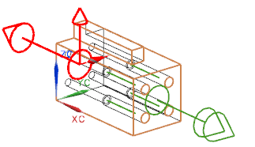
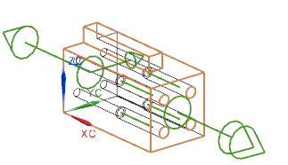

编辑连接件端口的旋转矢量
一旦您定义了一个端口，您就可以使用审核部件命令来返回编辑它的属性。
-
选择审核部件
 。
。您需要修改您刚刚创建的连接件端口上的旋转矢量方向。
-
在审核部件对话框中，展开连接件节点，然后右击 FITT_XXXXX 节点并选择编辑。
您也可以点击审核部件对话框底部的编辑 ，以打开编辑连接件端口对话框。
-
在选择步骤框中，点击旋转矢量。

-
在过滤器列表中，确保选择的是矢量。
您必须把旋转矢量与+YC 轴对齐。
-
在矢量方法列表中，选择 YC 轴。
将在图形窗口中显示新旋转矢量的预览。

-
点击两次确定。

这个端口的旋转箭头现在将指向 WCS 的 YC 方向。
-
关闭部件。